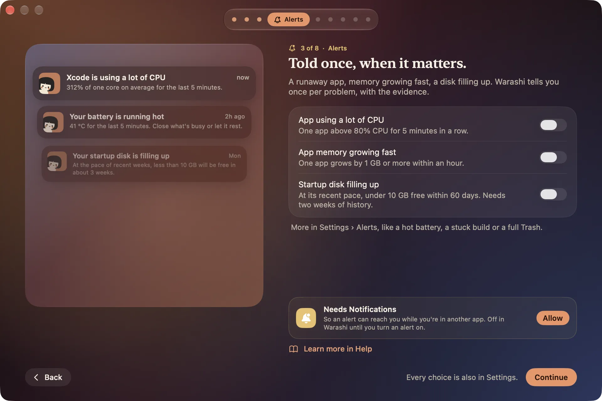

The first time Warashi opens, a short tour shows you around. Each chapter is the same shape, so you learn it once: the feature, live, on the left; on the right, what it does, the one thing to try with the real setting, and at the bottom the permission it needs, with why and one button. A chapter that needs nothing says so. The dots at the top are the chapters: click any of them, or use ← and →. It takes about two minutes, and you can skip anything: every choice is also in Settings.
- Welcome
What Warashi is, and three promises: your history stays on this Mac, it asks only when a feature needs it, and there's no account. Anonymous usage statistics help improve Warashi; never your apps, files or history. Click Show Me Around.

Welcome. - Menu Bar
Choose what sits beside the spirit: a number, or your battery drawn to its level. Then click the spirit in your menu bar, and point at your notch: each is ticked off as you do it. Permission: Open at login, so the record has no gaps.

The menu bar, and Open at login. - History
An example day in the Flight Log, and how to click any moment in History. Switch on Record which app is in front to see how long you use each app. Needs no permission: only which app is in front, never Screen Recording, window titles, websites or keystrokes.

History. - Alerts
Three suggested alerts. Permission: Notifications. Switch an alert on, or press Allow, and macOS asks once; then Send a Test shows what an alert looks like. If notifications are off for Warashi, the chapter says where to turn them on.

Alerts, and Notifications. - Storage
Your whole disk as one ring, and the Trash. Permission: Full Disk Access, for your whole disk, the Trash's size and emptying it, and when Time Machine last backed up; names, sizes and dates only. macOS has no button for it: press Open Settings and switch on Warashi in the list, or drag the icon in. The chapter notices the moment it's on; if macOS applies it only after Warashi opens again, press Reopen and the tour comes back here. See Storage.

Storage, and Full Disk Access. - Battery
Only on Macs with a battery. The battery dial with your limit marked, and the real control: switch on Stop charging at. Permission: the System helper, for limits below 80%, Discharge while plugged in, staying awake with the lid closed, and macOS's own processes in Apps. Press Turn On, then switch on Warashi in System Settings › General › Login Items. See Battery & charge limit.

Battery, and the System helper. - Agents
Only if you use Claude Code, Codex or Cursor. Switch on watching, being told when an agent needs you, and Keep Awake while one works. Permission: Claude Code's sign-in, only to show Claude's usage limit: macOS asks once whether Warashi may read it; choose Always Allow. See Coding agents.

Coding agents, and Claude Code's sign-in. - Breaks
Breaks, Soft Focus (⌃⌥⌘F) and Keep Awake for an hour, each one switch or button away; Try a Break and Show Sit Up show the real thing. Needs no permission: breaks only check whether your mic or camera is in use, and Soft Focus never sees your screen.

Breaks, Soft Focus and Keep Awake. - Ready
What's on, read live, with where to change each one, and Permissions: each one on, or not now, with what it opens. Links to Help, Questions and Guides, the shortcuts worth knowing, then Start Using Warashi.

Ready.
If something's not right
- Clicking the spirit or pointing at the notch isn't ticked off: make sure Warashi's item is visible in your menu bar, and that the notch glance is on.
- Send a Test shows nothing: allow Warashi in System Settings › Notifications.
- Full Disk Access still says Needs: switch Warashi off and on in the list, then press Reopen.
- The System helper waits: open System Settings › General › Login Items and switch on Warashi under Allow in the Background.
- The tour didn't appear: open Warashi from Applications, then Settings › General › Show Welcome Again.
More in Troubleshooting, or email adam@warashi.app.